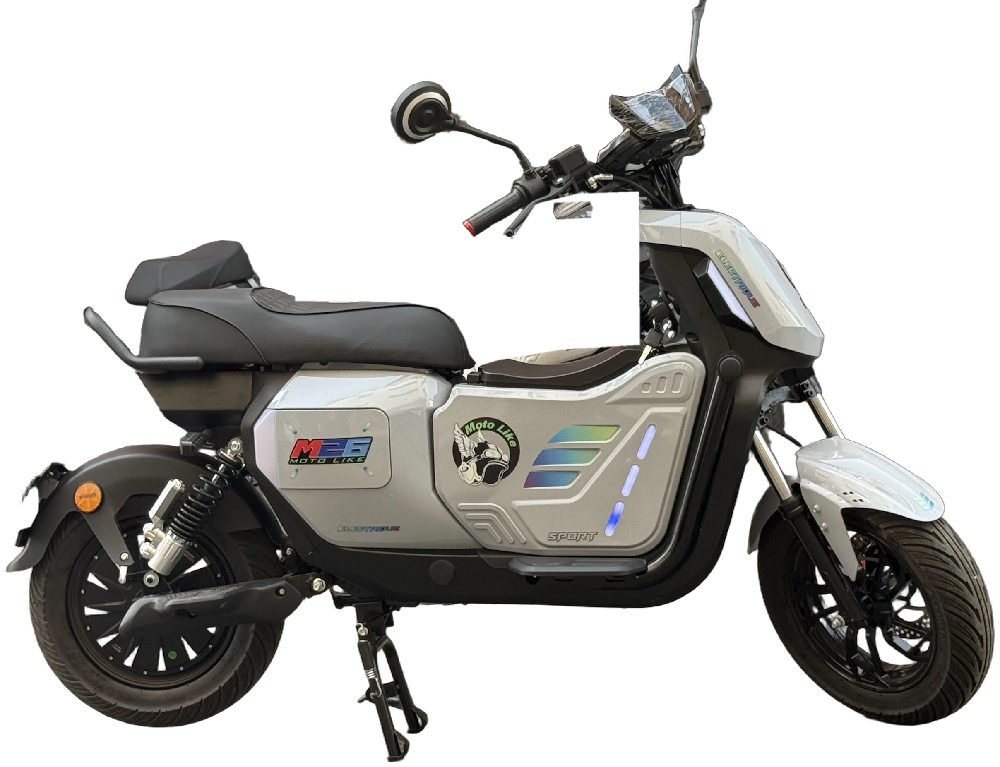
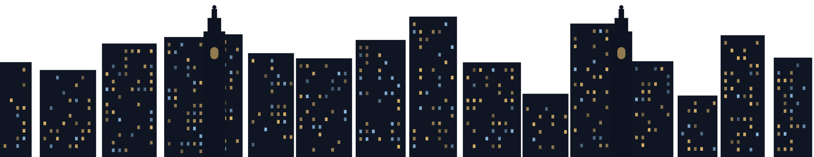
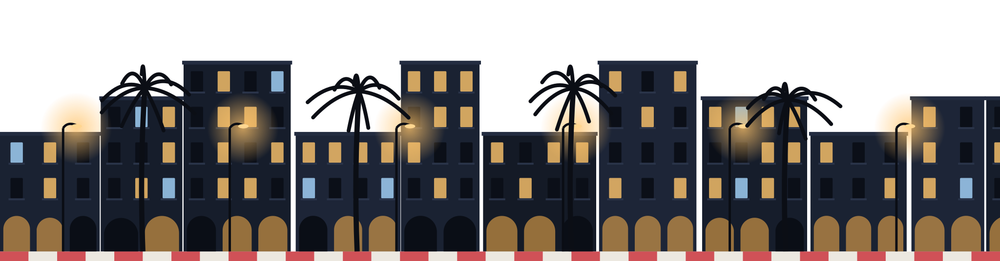
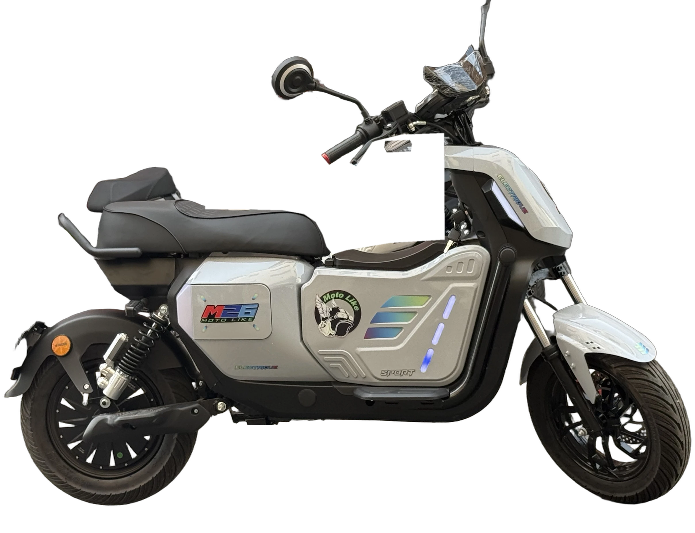
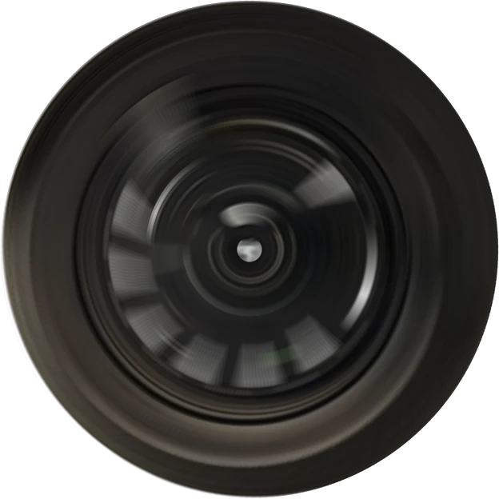
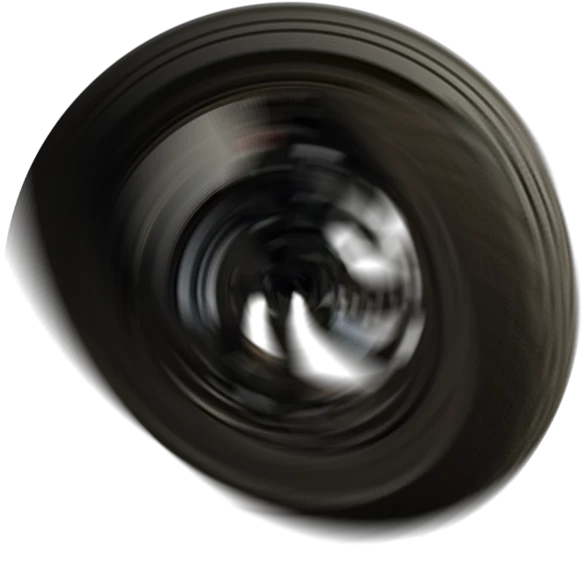

MOTEUR-ROUE · HUB ARRIÈRE
0
W
≈ 50–70 km/h*
Automatique · sans embrayage
*Vitesse maximale annoncée, variable selon la configuration et les conditions d'utilisation.





MOTEUR-ROUE · 2000 W
Sans embrayage.
Vous tournez, il avance.
TOURNEZ · ROULEZ